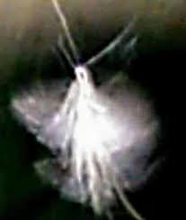

<div class="container-fluid py-5">
    <div class="row justify-content-center">
        
        <div class="col-md-2 d-none d-md-block">
            </div>

        <div class="col-md-8 bg-white p-5 shadow-sm rounded-4 border-top border-5 border-verde-oscuro">
            
            <div class="text-center mb-5">
                
                <h2 class="display-4 text-cafe fw-bold">¿Quiénes somos?</h2>
                <div class="mx-auto bg-verde-oscuro" style="height: 2px; width: 60px;"></div>
            </div>

            <div class="narrativa-quienes-somos fs-5">
                <p>
                    Somos la <strong>Sociedad Secreta de las Hadas</strong>, un tajo en el cristal del silencio que no busca ofrecerte alas de seda, sino la verdad de la estirpe que habita la herida. Existimos allí donde el lenguaje se quiebra y la noche se vuelve un animal herido, consagradas a custodiar los fragmentos de lo sagrado que la modernidad intenta borrar. 
                </p>

                <p class="my-4">
                    Nuestra vigilancia ocurre en las fisuras por donde lo antiguo aún respira, guardianas de un pacto que el mundo ha traicionado. Esta presencia nuestra, que cae como un naufragio de luz sobre vuestro cemento, es una conspiración de voces que solo el insomnio reconoce. 
                </p>

                <div class="p-4 my-5 bg-light rounded italic border-start border-4 border-cafe">
                    <p class="mb-0">
                        Hemos abierto este refugio de memoria no oficial para que lo invisible recupere su reino frente a la ceguera de los hombres, hilanderas de un archivo de lo que no puede ser dicho. Mientras el Velo se desgarra como una túnica vieja, nuestras manos cosen la herida con hilos de sombra, documentando el asombro para que no se extinga bajo el peso de la lógica.
                    </p>
                </div>

                <p>
                    No preguntes quiénes somos en esta ceremonia de ausencias, pues el nombre es la primera cárcel del ser; basta con saber que si has llegado hasta aquí, es porque compartes nuestra ajenidad y el mismo miedo a la luz total. 
                </p>

                <p class="text-center mt-5 fst-italic text-verde fw-bold">
                    Este sitio no existe para los ojos que no saben mirar.
                </p>
            </div>

            <div class="row mt-5 pt-4 border-top">
                <div class="col-12 text-center text-muted small">
                    <p>Miembros de la Sociedad: Jesica Araceli, Gatilde y Tita Maldonado</p>
                </div>
            </div>
        </div>

        <div class="col-md-2 d-none d-md-block">
            </div>
    </div>
</div>